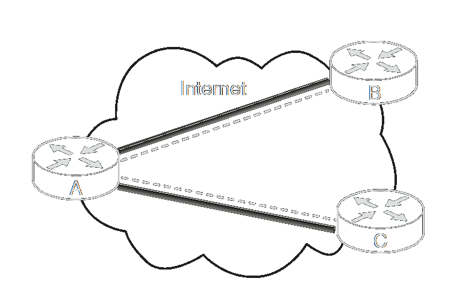
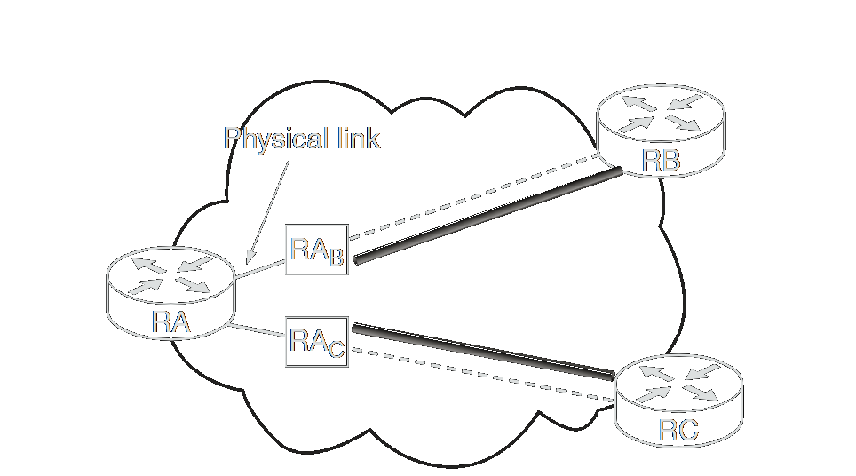

Modelos de Implantação do IPsec: Onde a Segurança Reside
O IPsec pode ser implementado e implantado tanto nos hosts finais (os dispositivos que originam e consomem os dados) quanto em gateways/roteadores intermediários, ou em ambos. A escolha de onde implantar o IPsec na rede depende diretamente dos requisitos de segurança e da arquitetura desejada.
Implementar o IPsec em hosts é ideal quando se busca segurança fim-a-fim. Por outro lado, quando a segurança é necessária apenas sobre um segmento específico da rede – como proteger a comunicação entre matriz e filiais através da internet (VPNs), ou criar Intranets e Extranets seguras – a implementação em roteadores ou gateways é mais apropriada.
Implementação em Hosts (Endpoints)
Consideramos "host" o dispositivo onde o pacote de dados é originalmente criado. Implementar o IPsec diretamente no host oferece vantagens significativas:
- Segurança Fim-a-Fim Verdadeira: A proteção é aplicada desde a origem até o destino final dos dados.
- Suporte a Todos os Modos: Capacidade de implementar tanto o Modo Transporte quanto o Modo Túnel.
- Segurança Granular (por Fluxo): Habilidade de aplicar políticas de segurança específicas para diferentes fluxos de dados ou aplicações.
- Contexto do Usuário: Possibilidade de usar o contexto do usuário autenticado no sistema para estabelecer conexões IPsec.
Existem duas abordagens principais para a implementação em hosts:
Integrada ao Sistema Operacional (OS-integrated)
Esta é a forma mais comum e eficiente de implementação hoje. O IPsec é um protocolo da camada de rede e, nesta abordagem, ele é integrado diretamente como parte da pilha de protocolos do sistema operacional (ex: Windows, Linux, macOS, *BSD).
Vantagens da Integração com o S.O.:
- Eficiência: A integração profunda com a camada de rede permite que o IPsec utilize serviços do sistema operacional, como fragmentação, descoberta de Path MTU (PMTU) e informações de contexto de sockets, resultando em uma implementação eficiente.
- Segurança por Fluxo Detalhada: Facilita a aplicação de políticas de segurança granulares para fluxos específicos (ex: uma transação web), pois o gerenciamento de chaves, os protocolos IPsec e a camada de rede podem ser integrados de forma transparente.
- Suporte Completo: Todos os modos e funcionalidades do IPsec são geralmente suportados.
Bump-in-the-Stack (BITS) - Abordagem Legada/Específica
Nesta abordagem, o IPsec é implementado como um "shim" – uma camada de software intermediária – inserida entre a camada de rede (IP) e a camada de enlace (drivers de dispositivo) da pilha de protocolos.
O principal atrativo histórico do BITS era permitir que fornecedores de soluções de segurança (como clientes VPN ou firewalls pessoais) oferecessem funcionalidades IPsec avançadas sem depender das implementações nativas dos sistemas operacionais, que poderiam ser limitadas ou inexistentes na época.
Desvantagens do BITS:
- Duplicação de Esforço: Exige que a implementação BITS replique muitas funcionalidades da camada de rede, como fragmentação e tabelas de roteamento, o que leva a complicações.
- Complexidade no Tratamento de Problemas: Dificulta o manejo de questões como PMTU e roteamento.
- Contexto Atual: Hoje, com o IPsec amplamente integrado e maduro nos principais sistemas operacionais, a abordagem BITS tornou-se rara e é considerada legada para a maioria dos casos de uso.
Implementação em Gateways de Segurança (Roteadores/Firewalls)
A implementação em roteadores ou firewalls permite proteger o tráfego que passa através desses dispositivos, geralmente para proteger um segmento inteiro de rede. Por exemplo, uma organização pode querer proteger apenas o tráfego destinado a filiais geograficamente distribuídas que atravessa a Internet, usando túneis IPsec entre seus gateways.
Vantagens da Implementação em Gateways:
- Segurança de Perímetro: Protege o tráfego entre duas redes através de uma rede pública (como a Internet), formando VPNs.
- Controle de Acesso: Permite autenticar e autorizar usuários ou outras redes que tentam acessar a rede privada, um pilar para VPNs de acesso remoto e intranets seguras.
Existem duas abordagens principais:
Implementação Nativa (Integrada ao Dispositivo)
Análoga à integração com o S.O. em hosts, aqui o IPsec é uma parte integral do software (firmware) do roteador ou firewall.
Esta é a abordagem mais comum para gateways modernos, oferecendo gerenciamento centralizado e, frequentemente, otimizações de performance.
Bump-in-the-Wire (BITW) - Dispositivo Dedicado/Especializado
Análogo ao BITS para hosts, o BITW envolve um dispositivo de hardware separado, dedicado à funcionalidade IPsec, que é fisicamente conectado "no fio" a uma interface de um roteador (que pode ou não ter IPsec nativo). Este dispositivo intercepta e processa os pacotes.
